2025 National 5 Physics marking instructions
Source: Scottish Qualifications Authority (SQA) / Qualifications Scotland. This is a StemInteract HTML companion, not an official HTML edition. Selectable text is supplied alongside original page images. Use the images or original PDF for equations, powers, fractions, vector notation, tables and diagrams; text extraction cannot fully preserve mathematical layout.
Jump to a question
PDF page 1
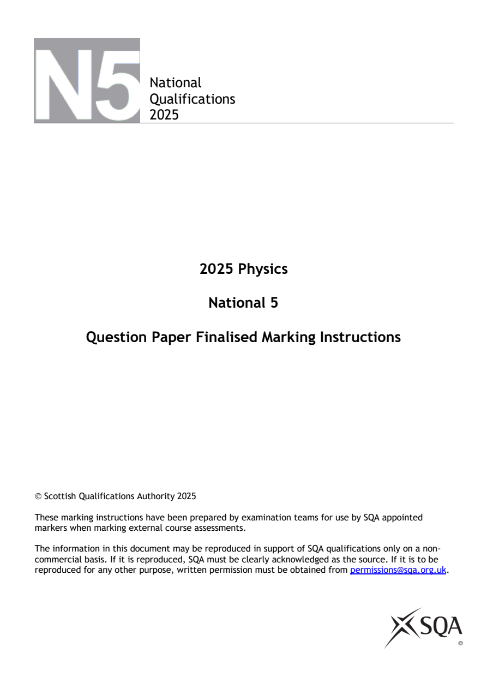
Selectable page text
National
Qualifications
2025
2025 Physics
National 5
Question Paper Finalised Marking Instructions
© Scottish Qualifications Authority 2025
These marking instructions have been prepared by examination teams for use by SQA appointed
markers when marking external course assessments.
The information in this document may be reproduced in support of SQA qualifications only on a non-
commercial basis. If it is reproduced, SQA must be clearly acknowledged as the source. If it is to be
reproduced for any other purpose, written permission must be obtained from permissions@sqa.org.uk.PDF page 2
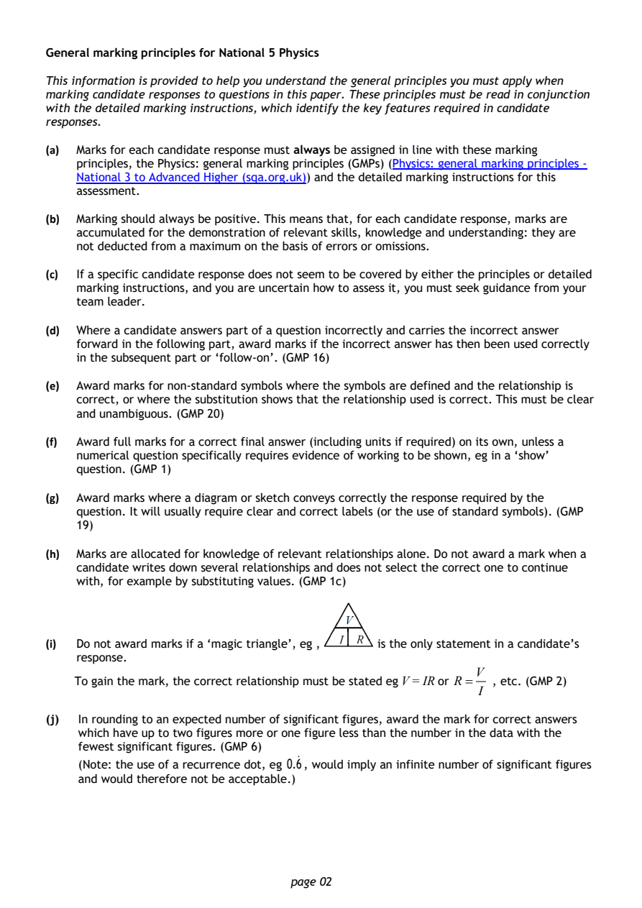
Selectable page text
General marking principles for National 5 Physics
This information is provided to help you understand the general principles you must apply when
marking candidate responses to questions in this paper. These principles must be read in conjunction
with the detailed marking instructions, which identify the key features required in candidate
responses.
(a) Marks for each candidate response must always be assigned in line with these marking
principles, the Physics: general marking principles (GMPs) (Physics: general marking principles -
National 3 to Advanced Higher (sqa.org.uk)) and the detailed marking instructions for this
assessment.
(b) Marking should always be positive. This means that, for each candidate response, marks are
accumulated for the demonstration of relevant skills, knowledge and understanding: they are
not deducted from a maximum on the basis of errors or omissions.
(c) If a specific candidate response does not seem to be covered by either the principles or detailed
marking instructions, and you are uncertain how to assess it, you must seek guidance from your
team leader.
(d) Where a candidate answers part of a question incorrectly and carries the incorrect answer
forward in the following part, award marks if the incorrect answer has then been used correctly
in the subsequent part or ‘follow-on’. (GMP 16)
(e) Award marks for non-standard symbols where the symbols are defined and the relationship is
correct, or where the substitution shows that the relationship used is correct. This must be clear
and unambiguous. (GMP 20)
(f) Award full marks for a correct final answer (including units if required) on its own, unless a
numerical question specifically requires evidence of working to be shown, eg in a ‘show’
question. (GMP 1)
(g) Award marks where a diagram or sketch conveys correctly the response required by the
question. It will usually require clear and correct labels (or the use of standard symbols). (GMP
19)
(h) Marks are allocated for knowledge of relevant relationships alone. Do not award a mark when a
candidate writes down several relationships and does not select the correct one to continue
with, for example by substituting values. (GMP 1c)
(i) Do not award marks if a ‘magic triangle’, eg , is the only statement in a candidate’s
response.
V
To gain the mark, the correct relationship must be stated eg V = IR or R= , etc. (GMP 2)
I
(j) In rounding to an expected number of significant figures, award the mark for correct answers
which have up to two figures more or one figure less than the number in the data with the
fewest significant figures. (GMP 6)
(Note: the use of a recurrence dot, eg 0.6, would imply an infinite number of significant figures
and would therefore not be acceptable.)
page 02PDF page 3
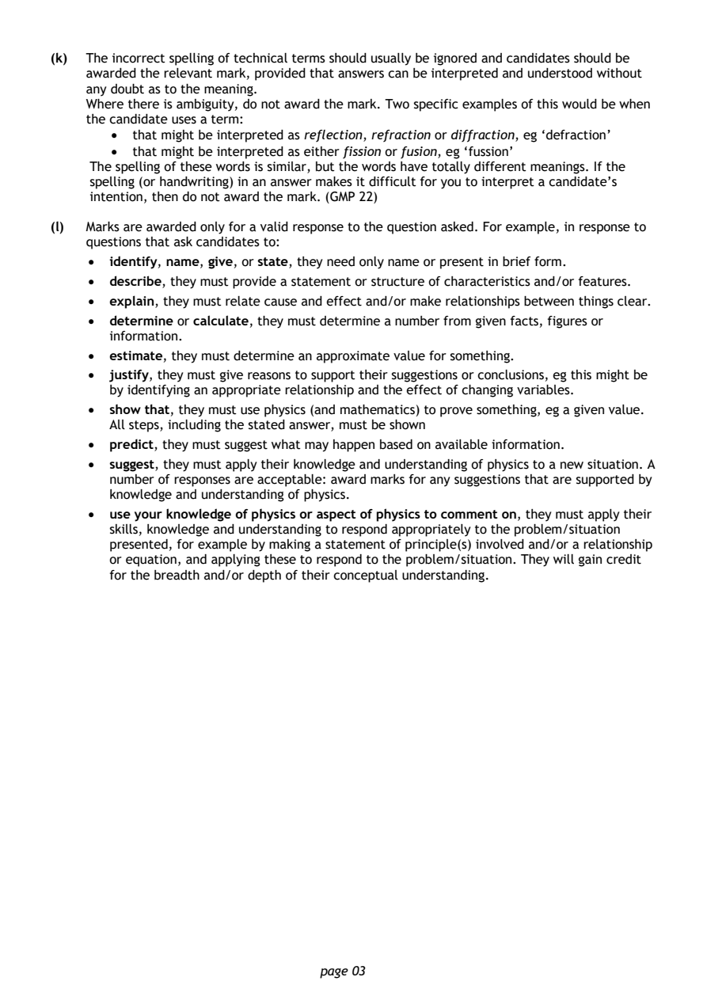
Selectable page text
(k) The incorrect spelling of technical terms should usually be ignored and candidates should be
awarded the relevant mark, provided that answers can be interpreted and understood without
any doubt as to the meaning.
Where there is ambiguity, do not award the mark. Two specific examples of this would be when
the candidate uses a term:
• that might be interpreted as reflection, refraction or diffraction, eg ‘defraction’
• that might be interpreted as either fission or fusion, eg ‘fussion’
The spelling of these words is similar, but the words have totally different meanings. If the
spelling (or handwriting) in an answer makes it difficult for you to interpret a candidate’s
intention, then do not award the mark. (GMP 22)
(l) Marks are awarded only for a valid response to the question asked. For example, in response to
questions that ask candidates to:
• identify, name, give, or state, they need only name or present in brief form.
• describe, they must provide a statement or structure of characteristics and/or features.
• explain, they must relate cause and effect and/or make relationships between things clear.
• determine or calculate, they must determine a number from given facts, figures or
information.
• estimate, they must determine an approximate value for something.
• justify, they must give reasons to support their suggestions or conclusions, eg this might be
by identifying an appropriate relationship and the effect of changing variables.
• show that, they must use physics (and mathematics) to prove something, eg a given value.
All steps, including the stated answer, must be shown
• predict, they must suggest what may happen based on available information.
• suggest, they must apply their knowledge and understanding of physics to a new situation. A
number of responses are acceptable: award marks for any suggestions that are supported by
knowledge and understanding of physics.
• use your knowledge of physics or aspect of physics to comment on, they must apply their
skills, knowledge and understanding to respond appropriately to the problem/situation
presented, for example by making a statement of principle(s) involved and/or a relationship
or equation, and applying these to respond to the problem/situation. They will gain credit
for the breadth and/or depth of their conceptual understanding.
page 03PDF page 4
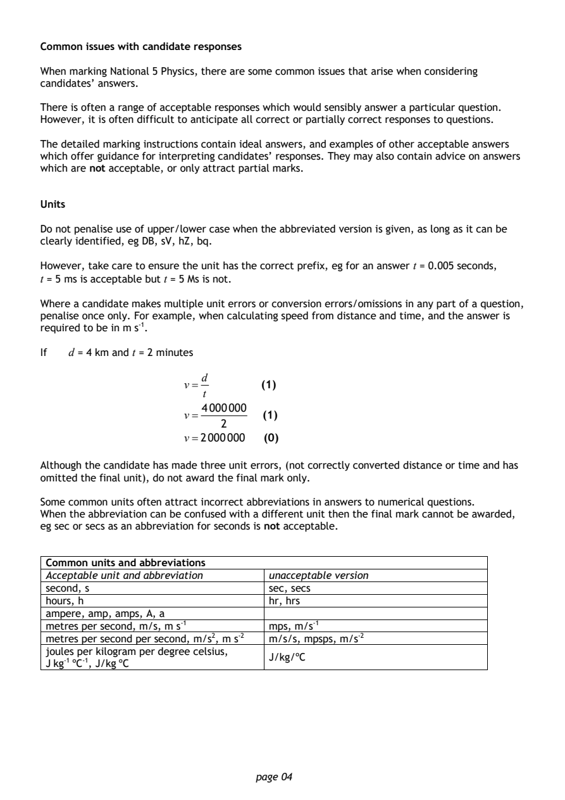
Selectable page text
Common issues with candidate responses
When marking National 5 Physics, there are some common issues that arise when considering
candidates’ answers.
There is often a range of acceptable responses which would sensibly answer a particular question.
However, it is often difficult to anticipate all correct or partially correct responses to questions.
The detailed marking instructions contain ideal answers, and examples of other acceptable answers
which offer guidance for interpreting candidates’ responses. They may also contain advice on answers
which are not acceptable, or only attract partial marks.
Units
Do not penalise use of upper/lower case when the abbreviated version is given, as long as it can be
clearly identified, eg DB, sV, hZ, bq.
However, take care to ensure the unit has the correct prefix, eg for an answer t = 0.005 seconds,
t = 5 ms is acceptable but t = 5 Ms is not.
Where a candidate makes multiple unit errors or conversion errors/omissions in any part of a question,
penalise once only. For example, when calculating speed from distance and time, and the answer is
required to be in ms⁻¹.
If d = 4 km and t = 2 minutes
d
v= (1)
t
4000000
v= (1)
2
v=2000000 (0)
Although the candidate has made three unit errors, (not correctly converted distance or time and has
omitted the final unit), do not award the final mark only.
Some common units often attract incorrect abbreviations in answers to numerical questions.
When the abbreviation can be confused with a different unit then the final mark cannot be awarded,
eg sec or secs as an abbreviation for seconds is not acceptable.
Common units and abbreviations
Acceptable unit and abbreviation unacceptable version
second, s sec, secs
hours, h hr, hrs
ampere, amp, amps, A, a
metres per second, m/s, m s⁻¹ mps, m/s⁻¹
metres per second per second, m/s², m s⁻² m/s/s, mpsps, m/s⁻²
joules per kilogram per degree celsius,
J/kg/ºC
J kg⁻¹ ºC⁻¹, J/kg ºC
page 04PDF page 5
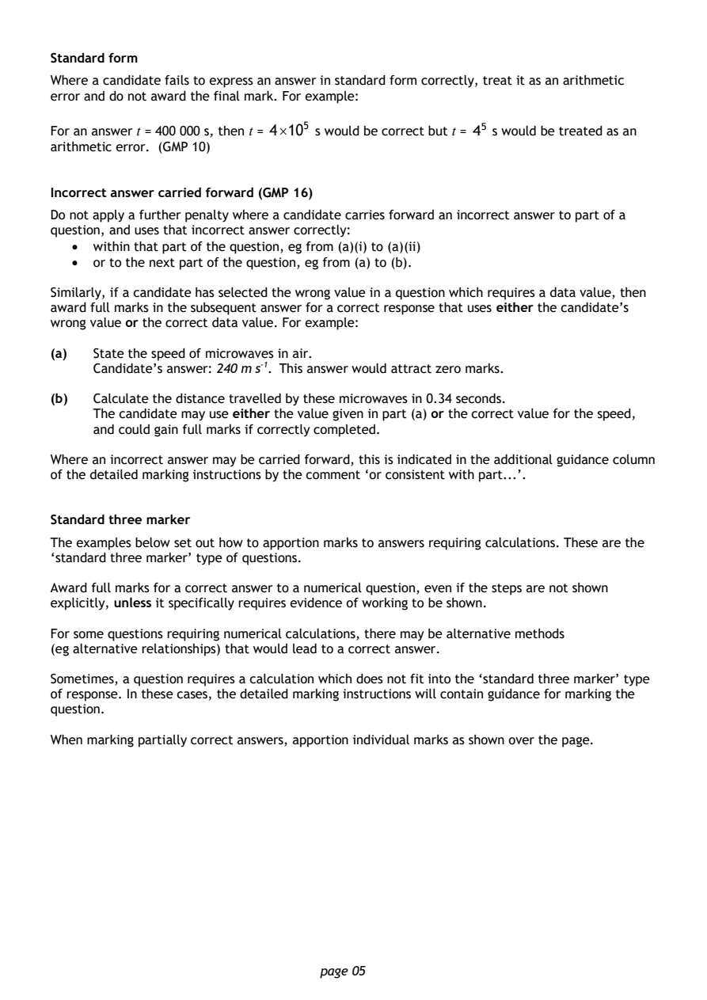
Selectable page text
Standard form
Where a candidate fails to express an answer in standard form correctly, treat it as an arithmetic
error and do not award the final mark. For example:
For an answer t = 400 000 s, then t = 4×10⁵ s would be correct but t = 4⁵ s would be treated as an
arithmetic error. (GMP 10)
Incorrect answer carried forward (GMP 16)
Do not apply a further penalty where a candidate carries forward an incorrect answer to part of a
question, and uses that incorrect answer correctly:
• within that part of the question, eg from (a)(i) to (a)(ii)
• or to the next part of the question, eg from (a) to (b).
Similarly, if a candidate has selected the wrong value in a question which requires a data value, then
award full marks in the subsequent answer for a correct response that uses either the candidate’s
wrong value or the correct data value. For example:
(a) State the speed of microwaves in air.
Candidate’s answer: 240 m s⁻¹. This answer would attract zero marks.
(b) Calculate the distance travelled by these microwaves in 0.34 seconds.
The candidate may use either the value given in part (a) or the correct value for the speed,
and could gain full marks if correctly completed.
Where an incorrect answer may be carried forward, this is indicated in the additional guidance column
of the detailed marking instructions by the comment ‘or consistent with part...’.
Standard three marker
The examples below set out how to apportion marks to answers requiring calculations. These are the
‘standard three marker’ type of questions.
Award full marks for a correct answer to a numerical question, even if the steps are not shown
explicitly, unless it specifically requires evidence of working to be shown.
For some questions requiring numerical calculations, there may be alternative methods
(eg alternative relationships) that would lead to a correct answer.
Sometimes, a question requires a calculation which does not fit into the ‘standard three marker’ type
of response. In these cases, the detailed marking instructions will contain guidance for marking the
question.
When marking partially correct answers, apportion individual marks as shown over the page.
page 05PDF page 6
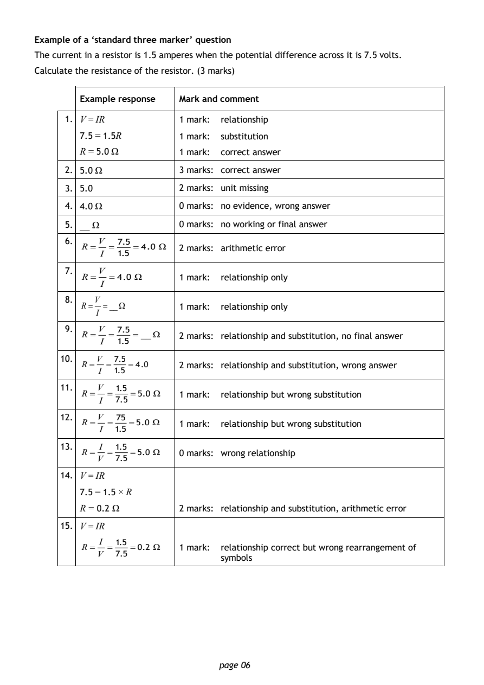
Selectable page text
Example of a ‘standard three marker’ question
The current in a resistor is 1.5 amperes when the potential difference across it is 7.5 volts.
Calculate the resistance of the resistor. (3 marks)
Example response Mark and comment
1. V = IR 1 mark: relationship
7.5 = 1.5R 1 mark: substitution
R = 5.0 Ω 1 mark: correct answer
2. 5.0 Ω 3 marks: correct answer
3. 5.0 2 marks: unit missing
4. 4.0 Ω 0 marks: no evidence, wrong answer
5. __ Ω 0 marks: no working or final answer
6. V 7.5
R = = =4.0 Ω 2 marks: arithmetic error
I 1.5
7. V
R = =4.0 Ω 1 mark: relationship only
I
8. V
R= =__Ω 1 mark: relationship only
I
9. V 7.5
R = = = __Ω 2 marks: relationship and substitution, no final answer
I 1.5
10. V 7.5
R= = =4.0 2 marks: relationship and substitution, wrong answer
I 1.5
11. V 1.5
R= = =5.0 Ω 1 mark: relationship but wrong substitution
I 7.5
12. V 75
R= = =5.0 Ω 1 mark: relationship but wrong substitution
I 1.5
13. I 1.5
R= = =5.0 Ω 0 marks: wrong relationship
V 7.5
14. V = IR
7.5 = 1.5 × R
R = 0.2 Ω 2 marks: relationship and substitution, arithmetic error
15. V = IR
I 1.5
R= = =0.2 Ω 1 mark: relationship correct but wrong rearrangement of
V 7.5
symbols
page 06PDF page 7
Section 1, Question 1Section 1, Question 2Section 1, Question 3Section 1, Question 4Section 1, Question 5Section 1, Question 6Section 1, Question 7Section 1, Question 8Section 1, Question 9Section 1, Question 10Section 1, Question 11Section 1, Question 12Section 1, Question 13Section 1, Question 14Section 1, Question 15Section 1, Question 16Section 1, Question 17Section 1, Question 18Section 1, Question 19Section 1, Question 20Section 1, Question 21Section 1, Question 22Section 1, Question 23Section 1, Question 24Section 1, Question 25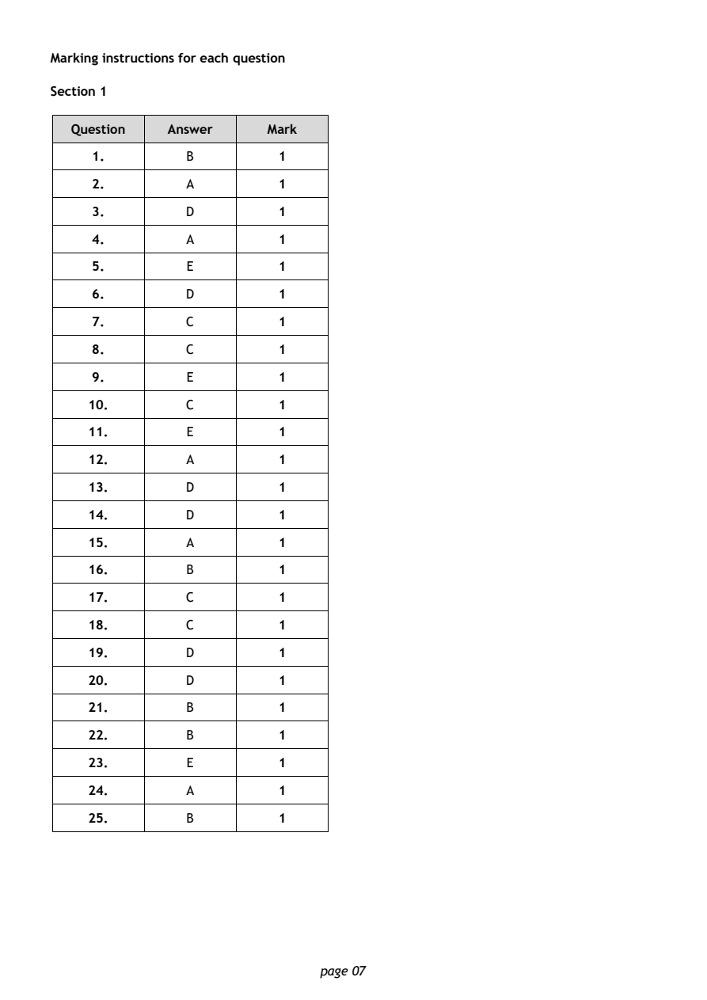
Selectable page text
Marking instructions for each question
Section 1
Question Answer Mark
1. B 1
2. A 1
3. D 1
4. A 1
5. E 1
6. D 1
7. C 1
8. C 1
9. E 1
10. C 1
11. E 1
12. A 1
13. D 1
14. D 1
15. A 1
16. B 1
17. C 1
18. C 1
19. D 1
20. D 1
21. B 1
22. B 1
23. E 1
24. A 1
25. B 1
page 07PDF page 8
Section 2, Question 1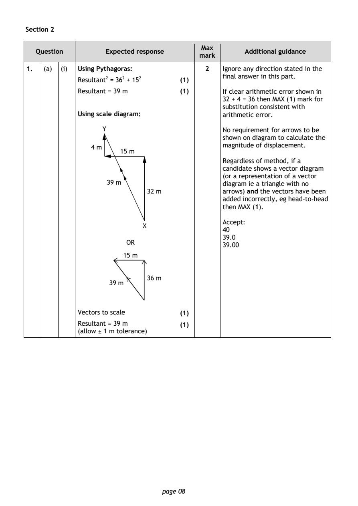
Selectable page text
Section 2
Max
Question Expected response Additional guidance
mark
1. (a) (i) Using Pythagoras: 2 Ignore any direction stated in the
final answer in this part.
Resultant² = 36² + 15² (1)
Resultant = 39 m (1) If clear arithmetic error shown in
32 + 4 = 36 then MAX (1) mark for
substitution consistent with
Using scale diagram: arithmetic error.
No requirement for arrows to be
shown on diagram to calculate the
magnitude of displacement.
Regardless of method, if a
candidate shows a vector diagram
(or a representation of a vector
diagram ie a triangle with no
arrows) and the vectors have been
added incorrectly, eg head-to-head
then MAX (1).
Accept:
40
39.0
39.00
Vectors to scale (1)
Resultant = 39 m (1)
(allow ± 1 m tolerance)
page 08PDF page 9
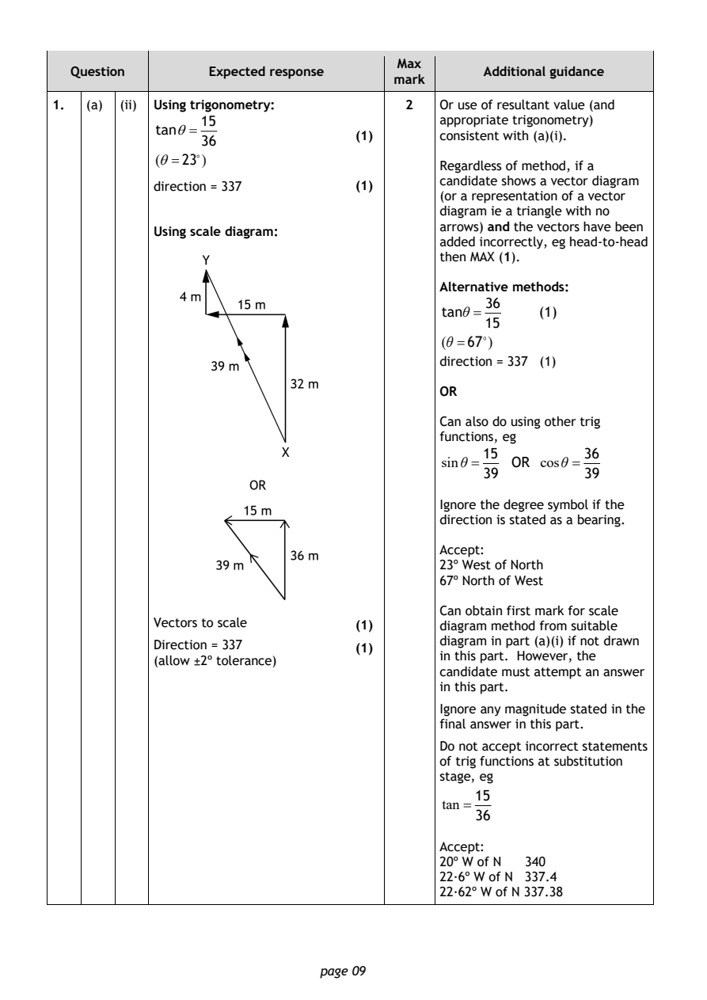
Selectable page text
Max
Question Expected response Additional guidance
mark
1. (a) (ii) Using trigonometry: 2 Or use of resultant value (and
15 appropriate trigonometry)
tanθ=
(1) consistent with (a)(i).
36
(θ=23 )
Regardless of method, if a
candidate shows a vector diagram
direction = 337 (1)
(or a representation of a vector
diagram ie a triangle with no
arrows) and the vectors have been
Using scale diagram:
added incorrectly, eg head-to-head
then MAX (1).
Alternative methods:
36
tanθ = (1)
15
(θ =67 )
direction = 337 (1)
OR
Can also do using other trig
functions, eg
15 36
sinθ = OR cosθ =
39 39
Ignore the degree symbol if the
direction is stated as a bearing.
Accept:
23º West of North
67º North of West
Can obtain first mark for scale
Vectors to scale (1) diagram method from suitable
diagram in part (a)(i) if not drawn
Direction = 337 (1)
in this part. However, the
(allow ±2º tolerance)
candidate must attempt an answer
in this part.
Ignore any magnitude stated in the
final answer in this part.
Do not accept incorrect statements
of trig functions at substitution
stage, eg
15
tan =
36
Accept:
20º W of N 340
22·6º W of N 337.4
22·62º W of N 337.38
page 09PDF page 10
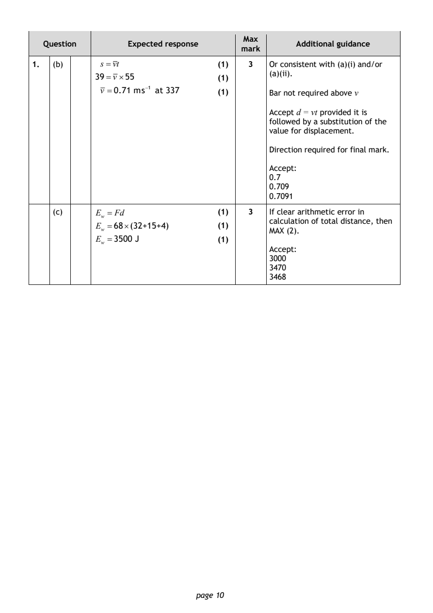
Selectable page text
Max
Question Expected response Additional guidance
mark
1. (b) s =vt (1) 3 Or consistent with (a)(i) and/or
(a)(ii).
39=v ×55 (1)
v =0.71 ms⁻¹ at 337 (1) Bar not required above v
Accept d = vt provided it is
followed by a substitution of the
value for displacement.
Direction required for final mark.
Accept:
0.7
0.709
0.7091
(c) E_{w} = Fd (1) 3 If clear arithmetic error in
calculation of total distance, then
E_{w} =68×(32+15+4) (1)
MAX (2).
E_{w} =3500 J (1)
Accept:
3000
3470
3468
page 10PDF page 11
Section 2, Question 2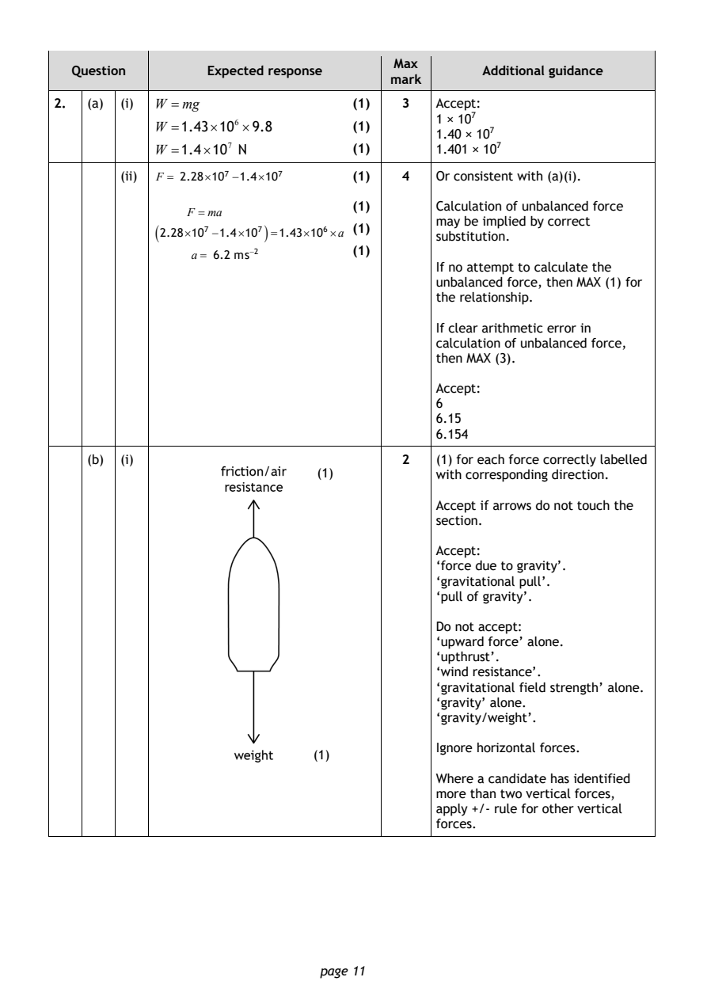
Selectable page text
Max
Question Expected response Additional guidance
mark
2. (a) (i) W =mg (1) 3 Accept:
1 × 10⁷
W =1.43×10⁶×9.8 (1)
1.40 × 10⁷
W =1.4×10⁷ N (1) 1.401 × 10⁷
(ii) F = 2.28×10⁷−1.4×10⁷ (1) 4 Or consistent with (a)(i).
(1) Calculation of unbalanced force
F =ma
may be implied by correct
( ) (1)
2.28×10⁷−1.4×10⁷ =1.43×10⁶×a substitution.
(1)
a= 6.2 ms⁻²
If no attempt to calculate the
unbalanced force, then MAX (1) for
the relationship.
If clear arithmetic error in
calculation of unbalanced force,
then MAX (3).
Accept:
6
6.15
6.154
(b) (i) 2 (1) for each force correctly labelled
(1) with corresponding direction.
Accept if arrows do not touch the
section.
Accept:
‘force due to gravity’.
‘gravitational pull’.
‘pull of gravity’.
Do not accept:
‘upward force’ alone.
‘upthrust’.
‘wind resistance’.
‘gravitational field strength’ alone.
‘gravity’ alone.
‘gravity/weight’.
Ignore horizontal forces.
(1)
Where a candidate has identified
more than two vertical forces,
apply +/- rule for other vertical
forces.
page 11PDF page 12
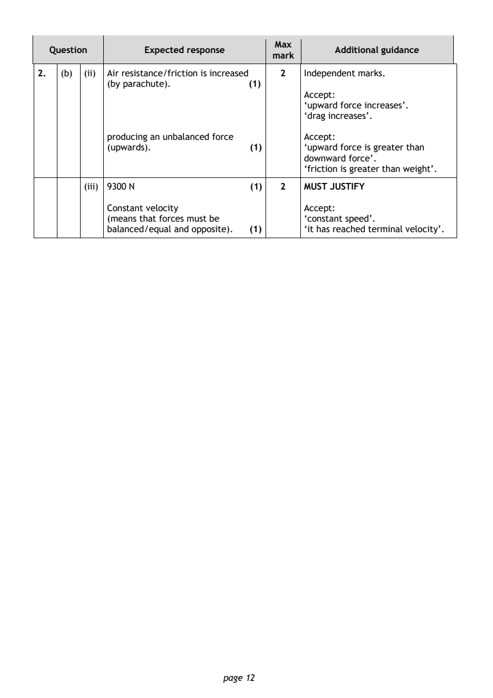
Selectable page text
Max
Question Expected response Additional guidance
mark
2. (b) (ii) Air resistance/friction is increased 2 Independent marks.
(by parachute). (1)
Accept:
‘upward force increases’.
‘drag increases’.
producing an unbalanced force Accept:
(upwards). (1) ‘upward force is greater than
downward force’.
‘friction is greater than weight’.
(iii) 9300 N (1) 2 MUST JUSTIFY
Constant velocity Accept:
(means that forces must be ‘constant speed’.
balanced/equal and opposite). (1) ‘it has reached terminal velocity’.
page 12PDF page 13
Section 2, Question 3Selectable page text
Max
Question Expected response Additional guidance
mark
3. Award 3 marks where the candidate 3 Candidates may use a variety of
has demonstrated a good physics arguments to answer this
understanding of the physics involved. question.
They show a good comprehension of
the physics of the situation and Award marks based on candidates
provide a logically correct answer to demonstrating overall good,
the question posed. This type of reasonable, limited, or no
response might include a statement of understanding.
the principles involved, a relationship
or an equation, and the application of
these to respond to the problem. The
answer does not need to be
‘excellent’ or ‘complete’ for the
candidate to gain full marks.
Award 2 marks where the candidate
has demonstrated a reasonable
understanding of the physics involved.
They make some statement(s) that are
relevant to the situation, showing that
they have understood the problem.
Award 1 mark where the candidate
has demonstrated a limited
understanding of the physics involved.
They make some statement(s) that are
relevant to the situation, showing that
they have understood at least a little
of the physics within the problem.
Award 0 marks where the candidate
has not demonstrated an
understanding of the physics involved.
There is no evidence that they have
recognised the area of physics
involved, or they have not given any
statement of a relevant physics
principle. Award this mark also if the
candidate merely restates the physics
given in the question.
page 13PDF page 14
Section 2, Question 4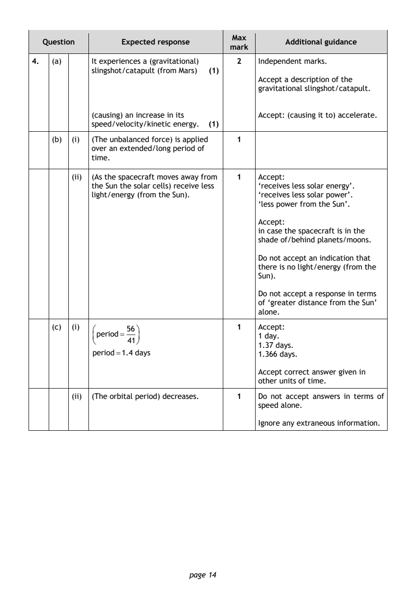
Selectable page text
Max
Question Expected response Additional guidance
mark
4. (a) It experiences a (gravitational) 2 Independent marks.
slingshot/catapult (from Mars) (1)
Accept a description of the
gravitational slingshot/catapult.
(causing) an increase in its Accept: (causing it to) accelerate.
speed/velocity/kinetic energy. (1)
(b) (i) (The unbalanced force) is applied 1
over an extended/long period of
time.
(ii) (As the spacecraft moves away from 1 Accept:
the Sun the solar cells) receive less ‘receives less solar energy’.
light/energy (from the Sun). ‘receives less solar power’.
‘less power from the Sun’.
Accept:
in case the spacecraft is in the
shade of/behind planets/moons.
Do not accept an indication that
there is no light/energy (from the
Sun).
Do not accept a response in terms
of ‘greater distance from the Sun’
alone.
(c) (i) 56 1 Accept:
period= 1 day.
41
1.37 days.
period=1.4 days 1.366 days.
Accept correct answer given in
other units of time.
(ii) (The orbital period) decreases. 1 Do not accept answers in terms of
speed alone.
Ignore any extraneous information.
page 14PDF page 15
Section 2, Question 5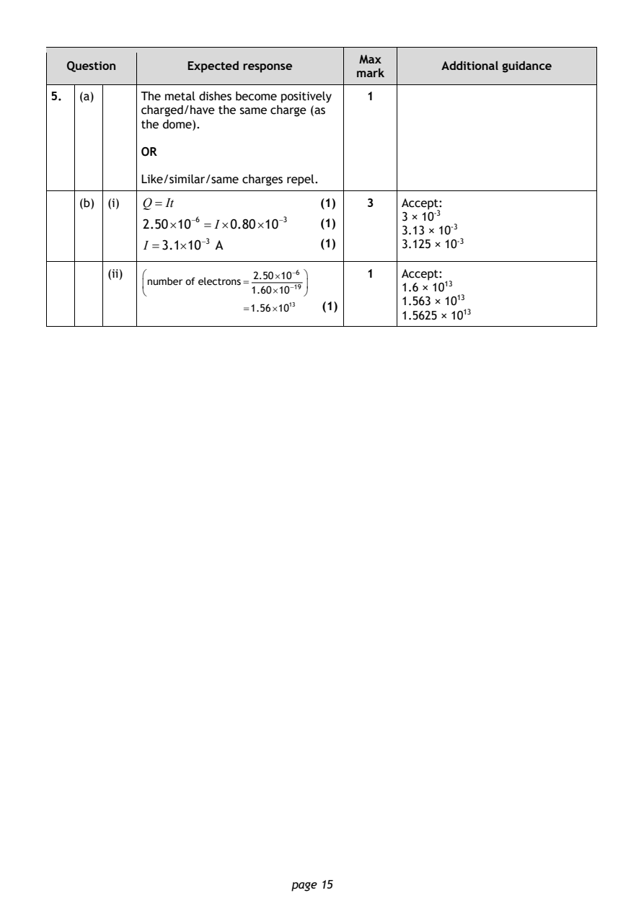
Selectable page text
Max
Question Expected response Additional guidance
mark
5. (a) The metal dishes become positively 1
charged/have the same charge (as
the dome).
OR
Like/similar/same charges repel.
(b) (i) Q= It (1) 3 Accept:
3 × 10⁻³
2.50×10⁻⁶ = I×0.80×10⁻³ (1)
3.13 × 10⁻³
I =3.1×10⁻³ A (1) 3.125 × 10⁻³
(ii) 2.50×10⁻⁶ 1 Accept:
number of electrons= 1.60×10⁻¹⁹ 1.6 × 10¹³
1.563 × 10¹³
=1.56×10¹³ (1)
1.5625 × 10¹³
page 15PDF page 16
Section 2, Question 6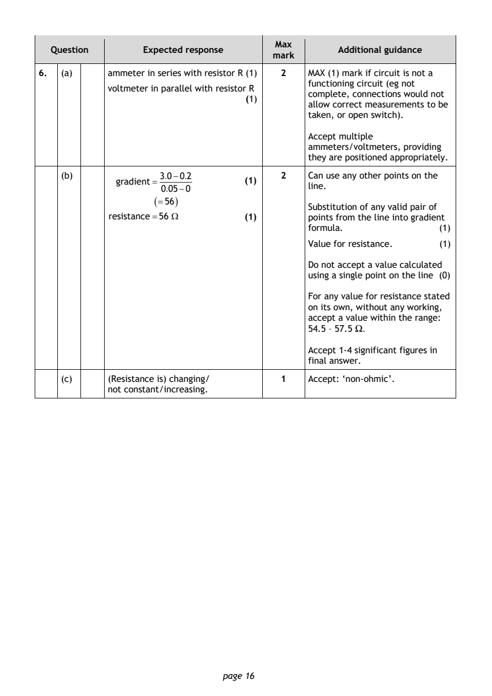
Selectable page text
Max
Question Expected response Additional guidance
mark
6. (a) ammeter in series with resistor R (1) 2 MAX (1) mark if circuit is not a
functioning circuit (eg not
voltmeter in parallel with resistor R
complete, connections would not
(1)
allow correct measurements to be
taken, or open switch).
Accept multiple
ammeters/voltmeters, providing
they are positioned appropriately.
(b) 3.0−0.2 2 Can use any other points on the
gradient= (1)
line.
0.05−0
(=56)
Substitution of any valid pair of
resistance=56 Ω (1) points from the line into gradient
formula. (1)
Value for resistance. (1)
Do not accept a value calculated
using a single point on the line (0)
For any value for resistance stated
on its own, without any working,
accept a value within the range:
54.5 – 57.5 Ω.
Accept 1-4 significant figures in
final answer.
(c) (Resistance is) changing/ 1 Accept: ‘non-ohmic’.
not constant/increasing.
page 16PDF page 17
Section 2, Question 7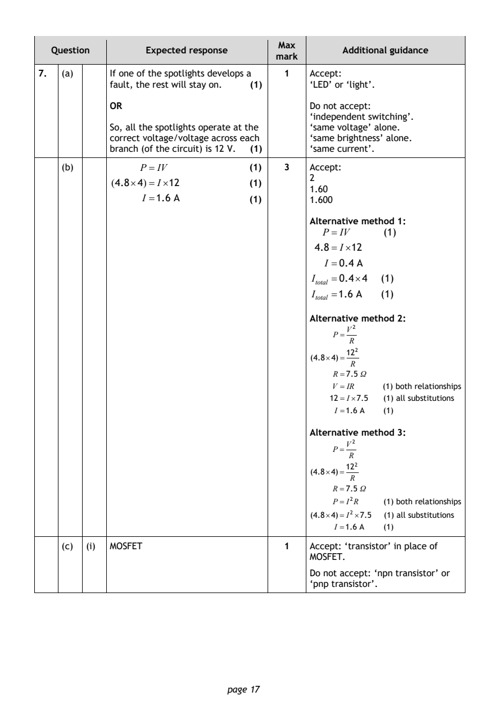
Selectable page text
Max
Question Expected response Additional guidance
mark
7. (a) If one of the spotlights develops a 1 Accept:
fault, the rest will stay on. (1) ‘LED’ or ‘light’.
OR Do not accept:
‘independent switching’.
So, all the spotlights operate at the ‘same voltage’ alone.
correct voltage/voltage across each ‘same brightness’ alone.
branch (of the circuit) is 12 V. (1) ‘same current’.
(b) P = IV (1) 3 Accept:
2
(4.8×4)= I×12 (1)
1.60
I =1.6 A (1) 1.600
Alternative method 1:
P= IV (1)
4.8= I×12
I =0.4 A
Iₜₒₜₐₗ =0.4×4 (1)
Iₜₒₜₐₗ =1.6 A (1)
Alternative method 2:
V²
P=
R
12²
(4.8×4)=
R
R=7.5 Ω
V =IR (1) both relationships
12=I×7.5 (1) all substitutions
I =1.6 A (1)
Alternative method 3:
V²
P=
R
12²
(4.8×4)=
R
R=7.5 Ω
P=I²R (1) both relationships
(4.8×4)=I²×7.5 (1) all substitutions
I =1.6 A (1)
(c) (i) M OSFET 1 Accept: ‘transistor’ in place of
MOSFET.
Do not accept: ‘npn transistor’ or
‘pnp transistor’.
page 17PDF page 18
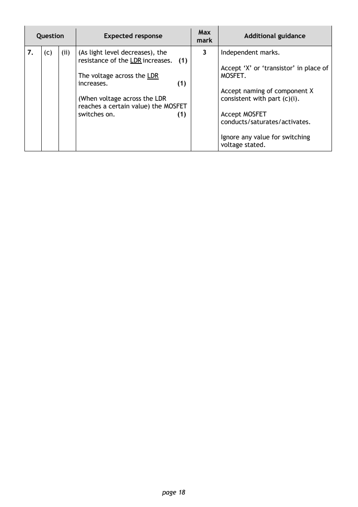
Selectable page text
Max
Question Expected response Additional guidance
mark
7. (c) (ii) (As light level decreases), the 3 Independent marks.
resistance of the LDRincreases. (1)
Accept ‘X’ or ‘transistor’ in place of
The voltage across the LDR MOSFET.
increases. (1)
Accept naming of component X
(When voltage across the LDR consistent with part (c)(i).
reaches a certain value) the MOSFET
switches on. (1) Accept MOSFET
conducts/saturates/activates.
Ignore any value for switching
voltage stated.
page 18PDF page 19
Section 2, Question 8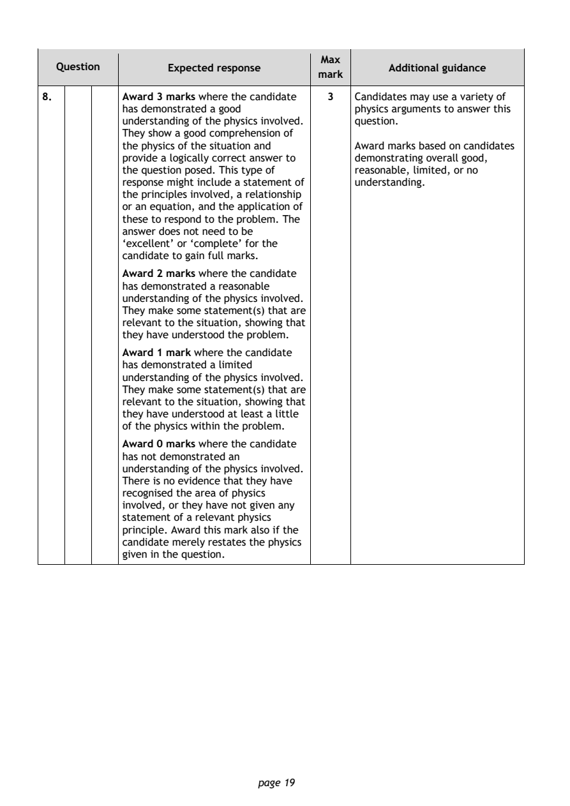
Selectable page text
Max
Question Expected response Additional guidance
mark
8. Award 3 marks where the candidate 3 Candidates may use a variety of
has demonstrated a good physics arguments to answer this
understanding of the physics involved. question.
They show a good comprehension of
the physics of the situation and Award marks based on candidates
provide a logically correct answer to demonstrating overall good,
the question posed. This type of reasonable, limited, or no
response might include a statement of understanding.
the principles involved, a relationship
or an equation, and the application of
these to respond to the problem. The
answer does not need to be
‘excellent’ or ‘complete’ for the
candidate to gain full marks.
Award 2 marks where the candidate
has demonstrated a reasonable
understanding of the physics involved.
They make some statement(s) that are
relevant to the situation, showing that
they have understood the problem.
Award 1 mark where the candidate
has demonstrated a limited
understanding of the physics involved.
They make some statement(s) that are
relevant to the situation, showing that
they have understood at least a little
of the physics within the problem.
Award 0 marks where the candidate
has not demonstrated an
understanding of the physics involved.
There is no evidence that they have
recognised the area of physics
involved, or they have not given any
statement of a relevant physics
principle. Award this mark also if the
candidate merely restates the physics
given in the question.
page 19PDF page 20
Section 2, Question 9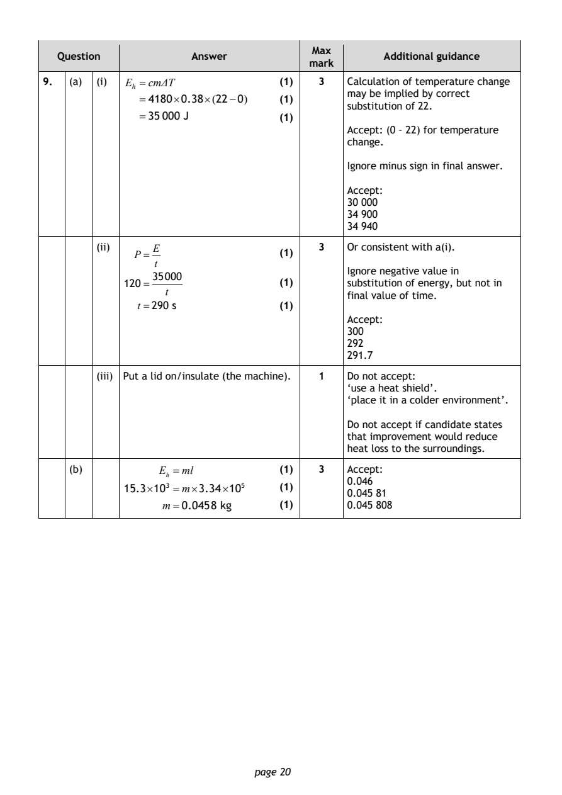
Selectable page text
Max
Question Answer Additional guidance
mark
9. (a) (i) Eₕ =cmΔT (1) 3 Calculation of temperature change
may be implied by correct
=4180×0.38×(22−0) (1)
substitution of 22.
=35000 J (1)
Accept: (0 – 22) for temperature
change.
Ignore minus sign in final answer.
Accept:
30 000
34 900
34 940
(ii) E 3 Or consistent with a(i).
P= (1)
t
Ignore negative value in
35000
120= (1) substitution of energy, but not in
t
final value of time.
t =290 s (1)
Accept:
300
292
291.7
(iii) P ut a lid on/insulate (the machine). 1 Do not accept:
‘use a heat shield’.
‘place it in a colder environment’.
Do not accept if candidate states
that improvement would reduce
heat loss to the surroundings.
(b) Eₕ =ml (1) 3 Accept:
0.046
15.3×10³ =m×3.34×10⁵ (1)
0.045 81
m=0.0458 kg (1) 0.045 808
page 20PDF page 21
Section 2, Question 10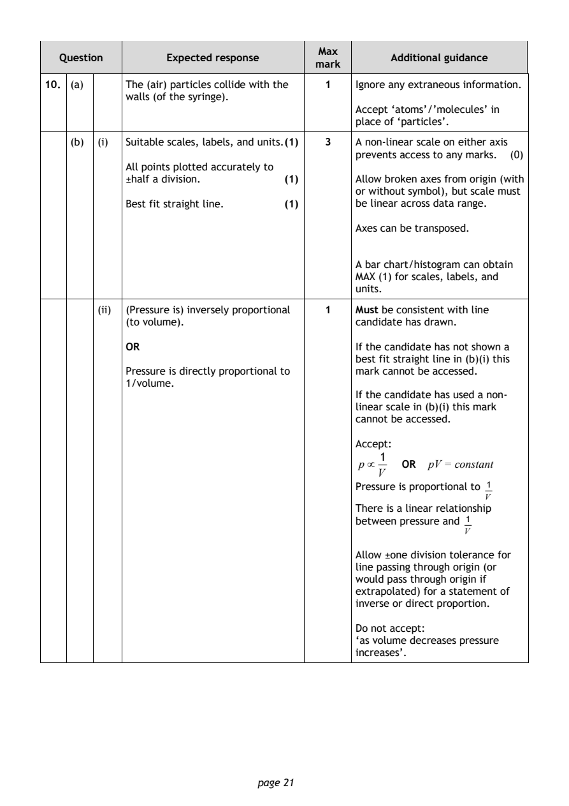
Selectable page text
Max
Question Expected response Additional guidance
mark
10. (a) The (air) particles collide with the 1 Ignore any extraneous information.
walls (of the syringe).
Accept ‘atoms’/’molecules’ in
place of ‘particles’.
(b) (i) Suitable scales, labels, and units. (1) 3 A non-linear scale on either axis
prevents access to any marks. (0)
All points plotted accurately to
±half a division. (1) Allow broken axes from origin (with
or without symbol), but scale must
Best fit straight line. (1) be linear across data range.
Axes can be transposed.
A bar chart/histogram can obtain
MAX (1) for scales, labels, and
units.
(ii) (Pressure is) inversely proportional 1 Must be consistent with line
(to volume). candidate has drawn.
OR If the candidate has not shown a
best fit straight line in (b)(i) this
Pressure is directly proportional to mark cannot be accessed.
1 /volume.
If the candidate has used a non-
linear scale in (b)(i) this mark
cannot be accessed.
Accept:
1
p∝ OR pV = constant
V
Pressure is proportional to ¹
V
There is a linear relationship
between pressure and ¹
V
Allow ±one division tolerance for
line passing through origin (or
would pass through origin if
extrapolated) for a statement of
inverse or direct proportion.
Do not accept:
‘as volume decreases pressure
increases’.
page 21PDF page 22
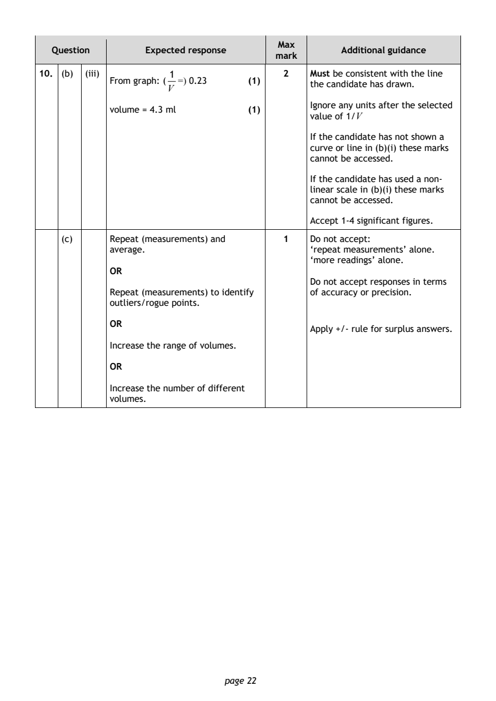
Selectable page text
Max
Question Expected response Additional guidance
mark
10. (b) (iii) 1 2 Must be consistent with the line
From graph: ( =) 0.23 (1)
the candidate has drawn.
V
Ignore any units after the selected
volume = 4.3 ml (1)
value of 1/V
If the candidate has not shown a
curve or line in (b)(i) these marks
cannot be accessed.
If the candidate has used a non-
linear scale in (b)(i) these marks
cannot be accessed.
Accept 1-4 significant figures.
(c) Repeat (measurements) and 1 Do not accept:
average. ‘repeat measurements’ alone.
‘more readings’ alone.
OR
Do not accept responses in terms
Repeat (measurements) to identify of accuracy or precision.
outliers/rogue points.
OR
Apply +/- rule for surplus answers.
Increase the range of volumes.
OR
Increase the number of different
volumes.
page 22PDF page 23
Section 2, Question 11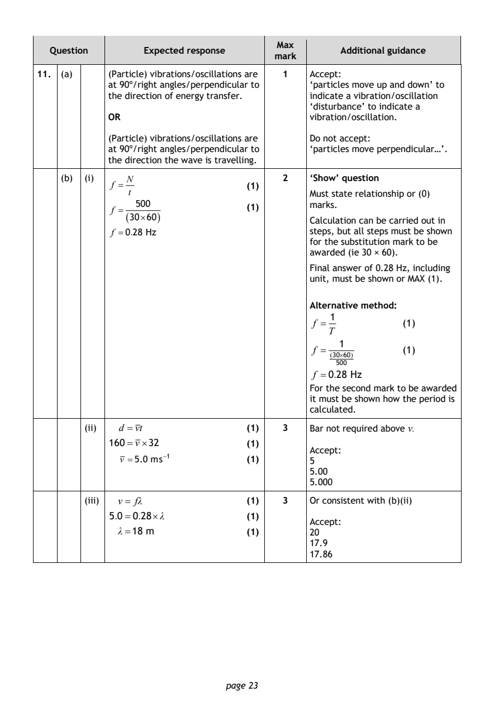
Selectable page text
Max
Question Expected response Additional guidance
mark
11. (a) (Particle) vibrations/oscillations are 1 Accept:
at 90º/right angles/perpendicular to ‘particles move up and down’ to
the direction of energy transfer. indicate a vibration/oscillation
‘disturbance’ to indicate a
OR vibration/oscillation.
(Particle) vibrations/oscillations are Do not accept:
at 90º/right angles/perpendicular to ‘ particles move perpendicular…’.
the direction the wave is travelling.
(b) (i) N 2 ‘Show’ question
f = (1)
t Must state relationship or (0)
500 marks.
f =
(1)
(30×60)
Calculation can be carried out in
f =0.28 Hz steps, but all steps must be shown
for the substitution mark to be
awarded (ie 30 × 60).
Final answer of 0.28 Hz, including
unit, must be shown or MAX (1).
Alternative method:
1
f = (1)
T
1
f = ₍ (1)
30×60)
500
f =0.28 Hz
For the second mark to be awarded
it must be shown how the period is
calculated.
(ii) d =vt (1) 3 Bar not required above v.
160=v×32 (1)
Accept:
v =5.0 ms⁻¹ (1) 5
5.00
5.000
(iii) v= fλ (1) 3 Or consistent with (b)(ii)
5.0 =0.28×λ (1)
Accept:
λ=18 m (1) 20
17.9
17.86
page 23PDF page 24
Section 2, Question 12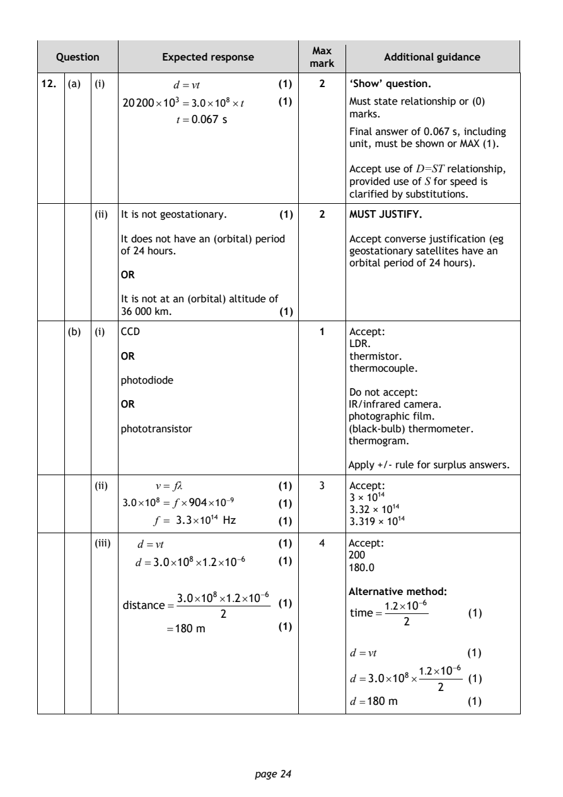
Selectable page text
Max
Question Expected response Additional guidance
mark
12. (a) (i) d =vt (1) 2 ‘Show’ question.
20200×10³ =3.0×10⁸×t (1) Must state relationship or (0)
marks.
t =0.067 s
Final answer of 0.067 s, including
unit, must be shown or MAX (1).
Accept use of D=ST relationship,
provided use of S for speed is
clarified by substitutions.
(ii) It is not geostationary. (1) 2 MUST JUSTIFY.
It does not have an (orbital) period Accept converse justification (eg
of 24 hours. geostationary satellites have an
orbital period of 24 hours).
OR
It is not at an (orbital) altitude of
36 000 km. (1)
(b) (i) CCD 1 Accept:
LDR.
OR thermistor.
thermocouple.
photodiode
Do not accept:
OR IR/infrared camera.
photographic film.
phototransistor (black-bulb) thermometer.
thermogram.
Apply +/- rule for surplus answers.
(ii) v= fλ (1) 3 Accept:
3 × 10¹⁴
3.0×10⁸ = f ×904×10⁻⁹ (1)
3.32 × 10¹⁴
f = 3.3×10¹⁴ Hz (1) 3.319 × 10¹⁴
(iii) d =vt (1) 4 Accept:
200
d =3.0×10⁸×1.2×10⁻⁶ (1)
180.0
Alternative method:
3.0×10⁸×1.2×10⁻⁶
distance= (1) 1.2×10⁻⁶
2 time= (1)
2
=180 m (1)
d =vt (1)
1.2×10⁻⁶
d =3.0×10⁸× (1)
2
d =180 m (1)
page 24PDF page 25
Section 2, Question 13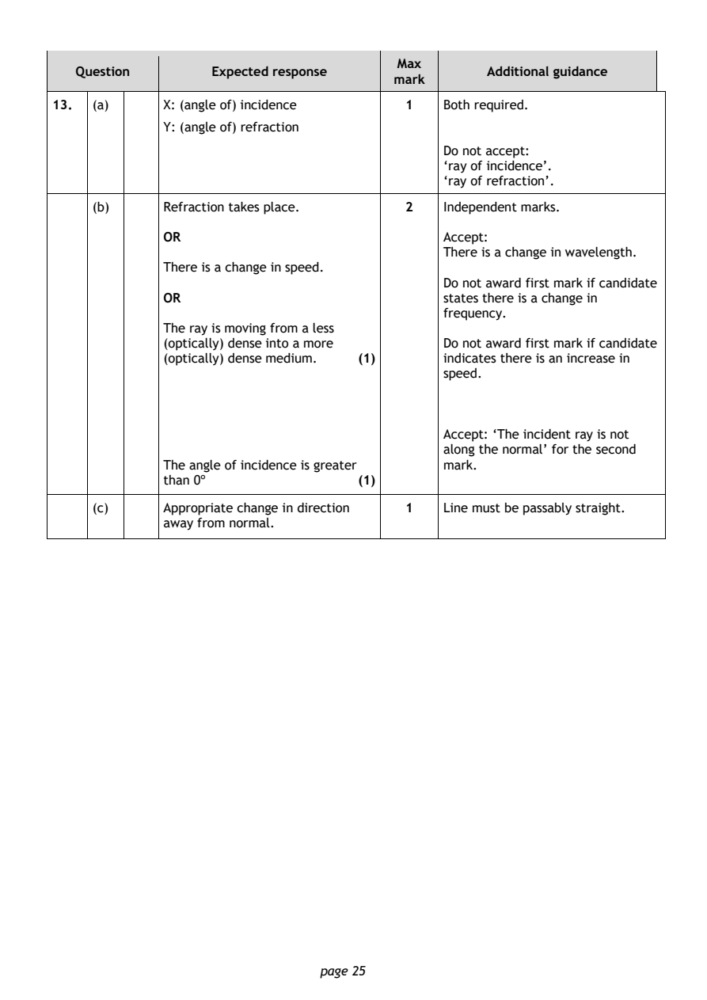
Selectable page text
Max
Question Expected response Additional guidance
mark
13. (a) X: (angle of) incidence 1 Both required.
Y: (angle of) refraction
Do not accept:
‘ray of incidence’.
‘ ray of refraction’.
(b) Refraction takes place. 2 Independent marks.
OR Accept:
There is a change in wavelength.
There is a change in speed.
Do not award first mark if candidate
OR states there is a change in
frequency.
The ray is moving from a less
(optically) dense into a more Do not award first mark if candidate
(optically) dense medium. (1) indicates there is an increase in
speed.
Accept: ‘The incident ray is not
along the normal’ for the second
The angle of incidence is greater mark.
t han 0º (1)
(c) Appropriate change in direction 1 L ine must be passably straight.
away from normal.
page 25PDF page 26
Section 2, Question 14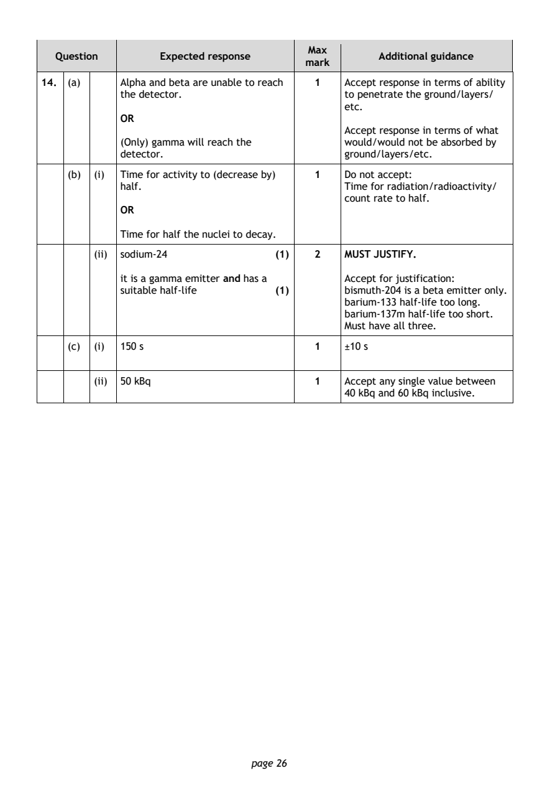
Selectable page text
Max
Question Expected response Additional guidance
mark
14. (a) Alpha and beta are unable to reach 1 Accept response in terms of ability
the detector. to penetrate the ground/layers/
etc.
OR
Accept response in terms of what
(Only) gamma will reach the would/would not be absorbed by
detector. ground/layers/etc.
(b) (i) Time for activity to (decrease by) 1 Do not accept:
half. Time for radiation/radioactivity/
count rate to half.
OR
Time for half the nuclei to decay.
( ii) sodium-24 (1) 2 MUST JUSTIFY.
it is a gamma emitter and has a Accept for justification:
suitable half-life (1) bismuth-204 is a beta emitter only.
barium-133 half-life too long.
barium-137m half-life too short.
Must have all three.
(c) (i) 150 s 1 ±10 s
(ii) 50 kBq 1 Accept any single value between
40 kBq and 60 kBq inclusive.
page 26PDF page 27
Section 2, Question 15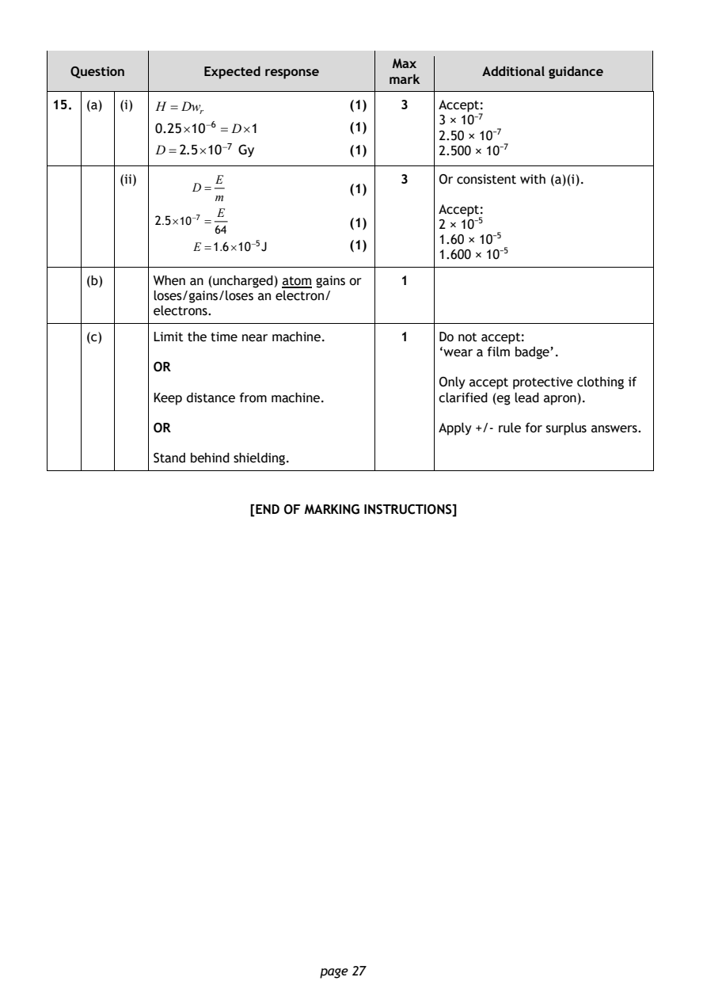
Selectable page text
Max
Question Expected response Additional guidance
mark
15. (a) (i) H =Dwᵣ (1) 3 Accept:
3 × 10⁻⁷
0.25×10⁻⁶ = D×1 (1)
2.50 × 10⁻⁷
D=2.5×10⁻⁷ Gy (1) 2.500 × 10⁻⁷
(ii) E 3 Or consistent with (a)(i).
D= (1)
m
Accept:
E
2.5×10⁻⁷ = (1) 2 × 10⁻⁵
64
1.60 × 10⁻⁵
E=1.6×10⁻⁵J (1)
1.600 × 10⁻⁵
(b) When an (uncharged) atom gains or 1
loses/gains/loses an electron/
electrons.
(c) Limit the time near machine. 1 Do not accept:
‘wear a film badge’.
OR
Only accept protective clothing if
Keep distance from machine. clarified (eg lead apron).
OR Apply +/- rule for surplus answers.
Stand behind shielding.
[END OF MARKING INSTRUCTIONS]
page 27